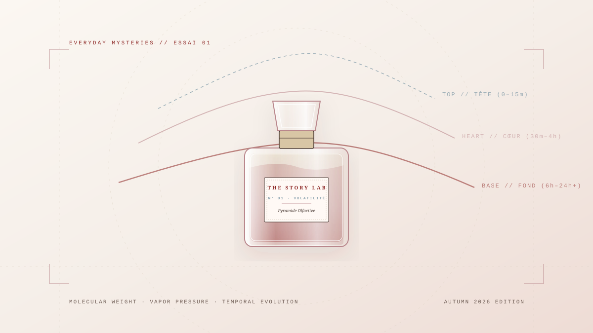
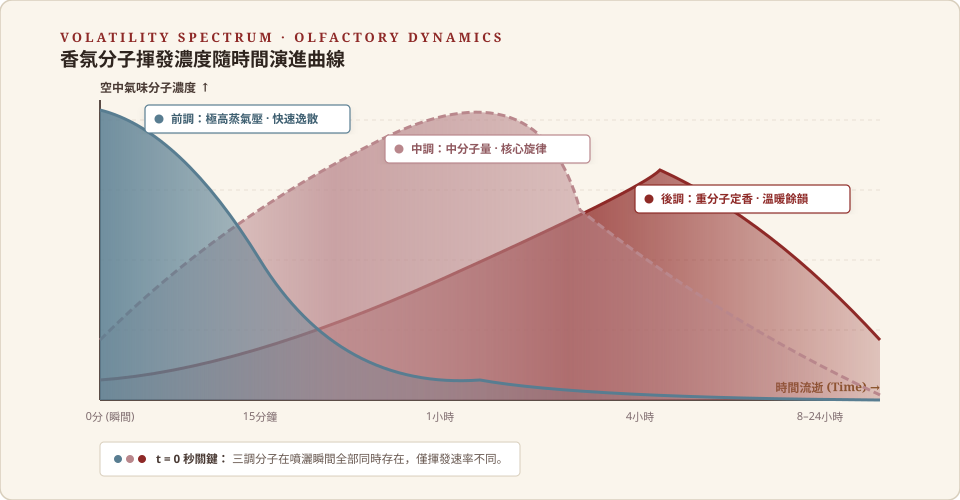

香水為什麼有前調、中調、後調？
氣味的時間交響詩：揭開香氛分子揮發率與金字塔結構的科學真相

你或許有過這樣的經驗：在百貨專櫃試噴香水時，第一下撲鼻而來的是明亮清甜的檸檬與佛手柑；半小時後走進咖啡館，空氣裡殘留的卻變成了一片溫柔馥郁的茉莉與玫瑰；到了深夜沐浴前，手腕衣袖間只剩下幽微、貼膚的雪松與麝香。同一瓶液體、同一塊肌膚，為什麼在幾小時的流轉之間，能演繹出三種截然不同的氣味風景？
時間的序曲：嗅覺金字塔的誕生與它的美麗誤解
走進任何一家香水店，產品說明小卡上總清晰印著前調（Top / Head Notes）、中調（Heart / Middle Notes）與後調（Base / Drydown Notes）。我們習慣將它視為一場精密安排的三部曲：彷彿第一位舞者退場，第二位才款款登台，最後由第三位拉下夜幕。
這個廣為人知的「嗅覺金字塔」模型，其實在香水數千年的歷史中相當年輕。它是在 20 世紀中葉，由法國調香名家 Jean Carles（曾創作出 Miss Dior 與 Ma Griffe 的傳奇大師）所提出的教學法。當時的他為了解決學徒難以捉摸香料揮發規律的困擾，將揮發快慢不同的原料在紙面上分層堆疊，從而奠定了現代調香的圖解傳統。
然而，商業行銷往往過度簡化了這座金字塔，讓許多人以為前中後調是「階段性按開關」式的切換。但真實的物理世界並非如此運作——在香水離開噴頭接觸皮膚的第 0 秒，瓶子裡的所有分子就已經同時灑落在你的毛孔上。
分子重量的競賽：蒸氣壓、沸點與皮膚上的微型蒸餾
我們能聞到某種氣味，前提是該物質的分子必須能夠「脫離液態表面，飄進空氣，最終抵達鼻腔黏膜上的嗅覺受器」。這意味著，決定一種香料出現在時間軸哪個位置的，不是它的香氣尊貴程度，而是冷酷精確的物理特性：蒸氣壓（Vapor Pressure）與分子量（Molecular Weight）。
前調（Head Notes）：輕盈的先鋒部隊。大多是由分子量較小（通常在 100 至 150 道爾頓左右）、蒸氣壓極高的化學分子組成。最典型的代表是柑橘皮中的檸檬烯（Limonene）、輕質酯類與醛類（Aldehydes）。這些分子非常活躍，一遇體溫便像受驚的鳥群般傾巢而出。它們在最初 5 到 15 分鐘內佔領了你的整個嗅覺空間，但也因迅速蒸發殆盡而在短時間內功成身退。
中調（Heart Notes）：氣味的主題旋律。通常由分子量適中（約 150 至 200 道爾頓）的單萜醇類、倍半萜烯所構成，例如玫瑰中的苯乙醇（Phenylethyl alcohol）、天竺葵中的香葉醇（Geraniol）或丁香酚。它們揮發速度居中，在前調揮發大半後逐漸成為核心，在皮膚上通常停留 1 至 4 小時，是真正定義這瓶香水個性的靈魂所在。
後調（Base Notes）：沈靜的地基與錨點。由分子量龐大（常超過 250 道爾頓）、結構複雜的大分子統治，例如廣藿香醇（Patchoulol）、檀香醇（Santalol）、香草醛（Vanillin）以及各類大環麝香（Macrocyclic Musks）。它們的沸點極高、蒸氣壓極低，極不情願離開皮膚。即使過去了八小時甚至二十四小時，這些重分子依然穩穩附著在角質層上，緩緩釋放溫暖深邃的尾韻。
【原理圖解】連續光譜：為什麼香氣不是斷點切換，而是波形共奏？
正如這張揮發動態濃度曲線所示：在噴出瞬間（t=0），後調的大分子其實已經存在並開始緩慢揮發；但由於此時前調分子的蒸發量太過磅礡，鼻腔受器被大量的高蒸氣壓分子飽和，大腦因而「忽視」了後調的存在。

隨著前調濃度呈指數型下降，中調與後調才從背景中「浮現」。這也是為什麼優秀的調香師如同管弦樂編曲家——他們必須調控各音部的衰減曲線，避免曲目出現突兀的斷裂或空洞（在法語調香術語中稱為 le trou，意指氣味斷層）。
定香的藝術：大分子如何「拉住」時光？
如果香料只是各自依照物理法則孤立揮發，那麼前調散去的速度可能會快到令人措手不及。在這裡，調香師運用了一項精妙的技巧——定香（Fixation）。
像安息香、乳香等天然樹脂，或是天然龍涎香與合成麝香等重質成分，結構中帶有密集的極性官能基或長碳氫鏈。當它們與清淡的前中調分子混合時，分子間的作用力（凡得瓦力與氫鍵）會像無形的手，輕輕「拉住」那些躁動不安的輕小分子，迫使它們的揮發速率慢下來。因此，後調的角色不僅是最後被聞到的底色，更是整座氣味建築隱形的地基鋼骨。
打破金字塔：並非所有香水都遵循三段式
雖然嗅覺金字塔至今仍是香水界最普及的溝通模型，但在現代香氛藝術中，已有越來越多作品選擇叛逆地繞開這個結構：
線性香水（Linear Fragrances）：最著名的代表莫過於傳奇調香師 Sophia Grojsman 的「手風琴風格」（如著名的 Trésor）。她大量使用少數幾種核心分子構成一個強大的核心和弦，讓香水從噴出的第一分鐘到數小時之後，都維持高度一致的氣味特徵。另外，以單一合成木質分子（如 Iso E Super）為核心的現代極簡主義香氛，更是徹底消解了金字塔的層次階級。
萬花筒／環狀香氛（Prismatic Fragrances）：有些調香師致力於創造如同旋轉光學稜鏡般的氣味，香氣不是線性地向下沉降，而是在空氣中隨著體溫與濕度交替閃爍、若隱若現。
在視覺主導的現代社會裡，香水是極少數必須依託於「第四維度——時間」才能完整展現的無形藝術。當我們購買一瓶香水時，我們買下的其實不單單是一種香氣，而是一段長達八小時、由皮膚溫度與化學蒸氣壓共同演繹的個人時間劇場。
下次在專櫃試香時，不妨放慢腳步。不要在噴灑後的五秒鐘內倉促定奪，帶著它離開櫃檯，去吹吹風、喝杯咖啡。給分子一點時間逃逸，也給自己一點時間，聆聽這首時間才會揭曉的隱形交響詩。